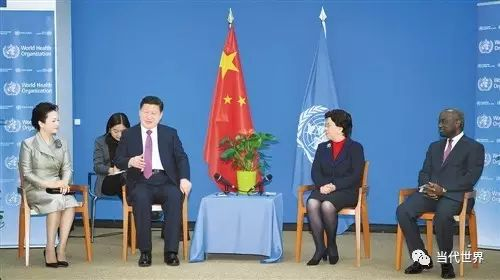
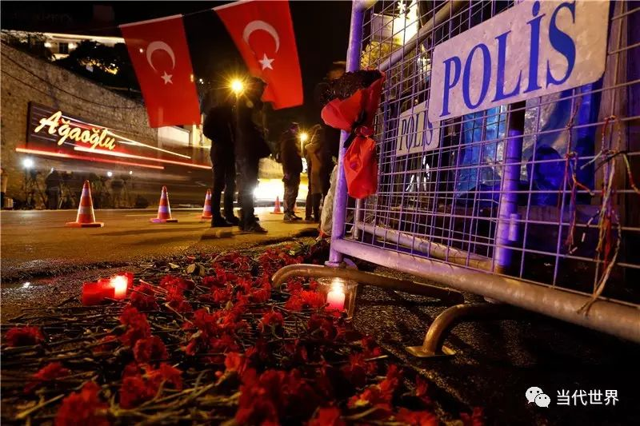
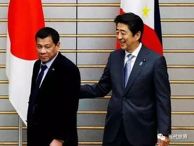
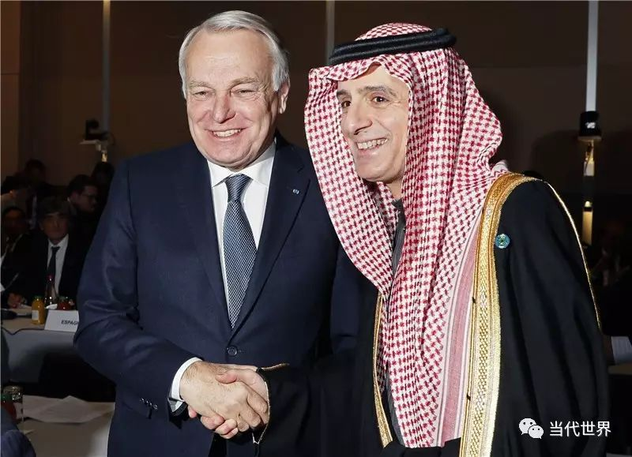

收录于合集
以下文章来源于当代世界 ，作者姚亿博
 当代世界 .
当代世界 .
《当代世界》杂志是中共中央对外联络部主管的国政类核心期刊，是深入阐释中央外交方针政策的重要理论阵地；是宣介中国特色大国外交特别是党的对外工作创新成果的权威传播载体；是深入研析世界形势、政党政治、国际格局发展变化和变革规律的专业智力汇聚场。

本刊编辑部／策划 姚亿博／执笔
01
习近平主席对瑞士进行国事访问，
参加达沃斯世界经济论坛,为世界提供中国智慧

国家主席习近平在瑞士日内瓦访问世界卫生组织。
习近平主席于2017年1月15—18日对瑞士进行国事访问、出席世界经济论坛2017年年会并访问瑞士国际组织。17日，习近平主席在瑞士达沃斯举行的世界经济论坛2017年年会开幕式发表重要讲话。这是2017年中国外交的开篇之举，创造了多个“第一次”：新世纪以来中国国家主席首次访问瑞士；中国最高领导人首次出席世界经济论坛年会；中国最高领导人首次造访世界卫生组织和国际奥委会等，访问期间，习近平主席在达沃斯世界经济论坛、联合国日内瓦总部先后发表重要演讲,受到国际舆论高度赞扬。
习近平主席在达沃斯世界经济论坛上的演讲，有力回应了当前世界经济的三大问题：“经济全球化怎么走”“世界经济怎么办”“中国经济怎么看”。而习近平主席在联合国日内瓦总部的演讲,则向世界提出“构建人类命运共同体,实现共赢共享。建设一个持久和平、普遍安全、共同繁荣、开放包容、绿色低碳的世界”的中国方案。正如瑞士《时报》评价的那样，习主席的瑞士之行向世界传递出一个信息——有着良好经济实力的中国，决定在全球地缘政治格局不稳定的时刻，承担起对世界政治的责任。可以说，这场新年首访不仅为中国外交带来了开门红，还为整个国际社会注入了满满的正能量。
2
伊斯坦布尔遭遇恐怖袭击，
土耳其未来安全形势不容乐观

2017年1月1日在土耳其伊斯坦布尔拍摄的悼念夜总会恐袭遇难者的鲜花和蜡烛。
1月1日凌晨，土耳其伊斯坦布尔市一家夜总会遭遇恐怖袭击，造成35人死亡，40人受伤。联合国安理会当日发表媒体声明，以最强烈的言辞谴责这一恐怖主义行径。事后，极端组织“伊斯兰国”宣称他们策划了本次袭击，以报复土耳其参与在叙利亚打击该组织的军事行动。这是“伊斯兰国”首次承认，在土耳其发动大规模袭击。自2015年夏季以来，土耳其出现新一轮恐袭高潮，造成至少400多人丧生。土当局把袭击主要归咎于反政府组织库尔德工人党和极端组织“伊斯兰国”。
土耳其之所以成为恐怖主义袭击的重灾区既有外因，也有内因。外部环境看，美俄持续在叙利亚围绕阿萨德政权展开博弈，激烈战事短期难以结束。战乱导致的数百万难民涌入土耳其境内，加之极端分子浑水摸鱼也使得形势进一步复杂化。而“7·15”未遂政变发生后，土耳其转而与俄罗斯、伊朗加强合作，主动消灭极端组织“伊斯兰国”，也难免受到其疯狂报复。从内部看，土耳其自身也是一团乱麻。一是“7·15”未遂政变后，总统埃尔多安对军警系统大加整饬，难免销蚀安保力量的积极性和战斗力。二是社会上持续不断的关于“世俗VS宗教”的争论与撕裂使得族群对立愈演愈烈。三是“革命人民解放党/阵线”、费杜拉赫组织等反政府势力也在这场乱局中跃跃欲试。长期来看，如果美俄等域外势力没有在叙利亚问题上达成实质共识，真正结束叙利亚的纷乱局面，土耳其很难在地区乱局中独善其身，类似的恐怖袭击或许还将上演。
3
古特雷斯正式上任联合国秘书长，
或更多关注难民问题
2017年1月19日，在瑞士达沃斯，联合国秘书长古特雷斯在世界经济论坛2017年年会上致辞。
1月3日，联合国第九任秘书长安东尼奥·古特雷斯正式在纽约上任。古特雷斯当天呼吁各国公民、政府、领导人努力使2017年成为克服分歧的和平之年，而和平要靠大家共同努力去实现。
古特雷斯曾任葡萄牙总理、联合国难民署署长，联合国秘书长一职的任期到2021年12月31日。未来五年，古特雷斯的政策理念和行事风格将对联合国未来改革方向和国际影响力产生重大影响。古特雷斯是一个经验丰富的外交官和政治家，尤其还有着多年难民署工作经验，这将给他的决策和工作风格留下深刻烙印。尽管联合国的议题很大程度上由成员国决定，但秘书长可以利用职位赋予他的特殊地位强化某些议题。目前，摆在古特雷斯面前的棘手难题可谓堆积如山。从叙利亚问题到欧洲难民危机，从安理会改革到气候变化问题，没有一项能够在短期内取得立竿见影的效果。不过从古特雷斯的过往经历看，他可能在难民和反恐问题上着墨较多且具有足够能力。这或许可以让饱受难民危机和恐怖主义的欧洲国家看到来自联合国积极支持的宝贵曙光。
4
日本首相安倍晋三访问亚太四国，
仍不放弃“零和思维”

1月12日，日本首相安倍晋三开始对菲律宾、澳大利亚、印尼和越南亚太四国进行访问。在菲律宾，安倍主动向菲总统杜特尔特示好，特意到其故乡达沃市，与他共进早餐，并宣布未来五年将向菲律宾提供一万亿日元援助。但对于南海问题，杜特尔特却仅表示菲日两国在保持海上安全免遭“任何形式的威胁”上具有共同利益。在印尼，为深化防务合作，承诺向印尼提供740亿日元援助。在越南，承诺提供1200亿日元贷款及六艘新巡逻船。在澳大利亚，与澳总理特恩布尔就共同努力推动TPP早日生效达成共识,还签署了军队互相提供弹药的《物资劳务相互提供协定》修改版。
在当前南海地区形势趋缓，世界经济环境呼吁团结协作的大背景下，安倍挑拨离间、处心积虑拉拢亚太国家，渲染所谓地区紧张。一方面，安倍希望借助此访继续推进自由贸易进程，并与有关国家加强合作以便使TPP得以生效，同时推动《区域全面经济伙伴关系》协定（RCEP）谈判能在与TPP同等水准上达成协议。说明安倍仍然秉持零和思维，甚至在特朗普对TPP说不的情况下，期冀自己成为TPP的代言人甚至旗手。另一方面，安倍此举还企图使本已风平浪静的地区局势增添波澜。日本内阁秘书长菅义伟直言，“为了维护自由与重视法制的国际秩序，日本必须和这些亚太国家合作，告诉他们团结很重要。”当前，菲律宾新任总统杜特尔特对外交政策进行大调整，积极加强对华关系，在南海问题上也保持了菲中成熟的理性合作。而越共中央总书记阮富仲更是刚刚结束颇为成功的访华之旅。日本在这一时间节点对菲、越等国进行拉拢，实则反映出安倍的强烈不安和极度不自信。这种违背亚太地区和平发展主流，企图借编织“围堵中国之网”来巩固自身主导地位的想法注定难以实现。
5
特朗普宣誓就职美国总统，纷乱局面远未结束
1月20日，唐纳德·特朗普正式宣誓就职，成为第45任美国总统，美国正式迎来“特朗普时代”。特朗普在就职演说中,高举“美国优先”旗帜，对“华盛顿政治”予以猛烈抨击，重申“让美国再次强大”。他还呼吁加强边境管控，创造更多就业，打击“伊斯兰国”等极端主义，在贸易等问题上更多考虑美国人民，并号召民众保持团结，摒弃偏见和歧视。当日，近60位民主党国会议员拒绝出席就职典礼，华盛顿、洛杉矶、芝加哥等多地爆发示威游行。少数族裔、女性、同性恋等群体“反特”情绪尤为突出，凸显美国社会撕裂、族群对立依旧严峻。
对于这场演说,国际舆论普遍充满担忧和怀疑。英国《卫报》认为特朗普使庄严的时刻笼罩在一片阴霾之下。《德国之声》则指出很难想象特朗普未来能够将撕裂的美国社会再度团结起来。虽然当选首日，特朗普就宣布了能源、外交、就业、军事、秩序、贸易等六大方面的改革举措。承诺要实现年均4％的经济增长率，在十年内新增2500万个就业岗位，但这些还仅仅是愿景而已。共和党方面，建制派和激进派龃龉不断，新政府96%的行政岗位未完成任命。重振经济方面，特朗普要加大基础设施、教育和军事装备投入，但财政赤字空间已经非常有限，又要大幅度减税，钱从哪里来就是一大难以自洽的矛盾。而在贸易领域，特朗普高调退出TPP、重新谈判北美自由贸易协定，强调“买美国货、雇美国人”，这与开放普惠的全球化主流背道而驰，实现起来绝非易事。特朗普的总统之路究竟会带给美国和世界怎样的未来，尚需人们冷静观察。
6
英国首相特蕾莎·梅发表“硬脱欧”演讲，
英欧关系面临新考验
1月17日，英国首相特蕾莎·梅在伦敦兰卡斯特宫发表演讲，阐述具体脱欧方案。她表示英国将退出欧洲统一大市场和关税同盟，但仍寻求能参与到欧洲统一大市场的业务中，以避免出现经济上陷入“悬崖”境地。脱欧后英国将加强边境控制和法律控制，这意味着英国将寻求“硬脱欧”，即不是与欧盟处于“半出，半进”，继续留在单一市场的“软脱欧”。但仍希望以“循序渐进的方案”来落实未来脱欧后与欧盟的关系，包括寻求与欧盟签订自由贸易协定等。此次演讲展现了梅对欧盟的明确态度，彻底排除了此前部分英国政客支持的“软脱欧”。
虽然有关英国退出欧盟的最终协议还要获得上下两院的批准，但脱欧进程无疑已经进入实质阶段。从梅演讲后英镑实现2008年以来最高的一次单日增长看，这张“脱欧路线图”至少为市场提供了难得的确定性。不过，英国想保持单一市场的好处，同时又获得移民和边界自主权，这是不可能的。梅之所以选择“硬脱欧”主要还是想快刀斩乱麻，尽快与其他国家谈判签署自由贸易协定（FTA）来弥补脱欧带来的诸多负面影响。而在欧盟看来，人员、货物、劳务与资金的自由流通一直是最核心的观点与政策。如果英国能够以现实理性的态度处理脱欧后续事务，无疑对欧盟、对世界经济来说都是不幸中的万幸。
7
中东和平会议在巴黎召开，
巴以问题和解曙光却难现

1月15日，在法国首都巴黎，法国外交部长让－马克·艾罗（左）在巴黎中东和会开幕式上与沙特阿拉伯外交大臣阿德尔·朱拜尔握手合影。
1月15日，由法国倡议的中东和平会议在巴黎召开，约70个国家和国际组织的代表参加了会议，与会各方重申支持以“两国方案”解决巴以冲突。会议发表的闭幕声明表示，应采取紧急措施扭转不利于解决巴勒斯坦和以色列冲突的趋势，推动巴以之间实现公正、持久和全面的和平。只有“两国方案”才能真正解决巴以争端，会议警告称，“绝不会承认威胁和破坏谈判的任何单边行动”。各方表示，近年来巴以地区暴力冲突不断，以色列继续推进定居点建设，这不利于解决巴以问题。巴以双方应立即开始有意义的直接谈判。同时，各方强调了以2002年阿拉伯和平倡议作为解决巴以冲突的全面框架的重要性。
解铃还须系铃人。可惜的是，本次和平会议并没有当事方以色列和巴勒斯坦的全程参与，会议声明的实质意义令人担忧。随着美国新总统特朗普的上台，巴以问题又将面临新的变数。虽然多年来国际社会对解决巴以问题的“两国方案”具有高度共识，但由于美国的“顽固”立场始终难以获得推动。本次英国没有在联合声明上签字，就显示出其等待美国新政府具体政策再做跟进的观望态度。从特朗普高调的挺以言论、自身及家庭成员与犹太群体千丝万缕的联系看，美国新政府很难在巴以问题上做出大的变革举措，甚至还存在立场进一步倒退冒进的可能。
责任编辑：魏银萍
平台编辑：魏银萍 吴小玲
本文版权归《当代世界》杂志所有，转载需联系本公众平台授权
《当代世界》2017年第2期
中共中央对外联络部主管·研究国际问题的必读期刊

**** 【中文刊】 18元/期，216元/年
邮发代号：82-723，国内统一刊号：CN 11-3535/D
国际标准刊号：ISSN 1006-4206
【英文刊】 80元/期，320元/年
邮发代号：80-270，国内统一刊号：CN 10-1398/D
国际标准刊号：ISSN 2096-1596
地址：北京市复兴路4号中联部（100860）
订购电话：010-83908408
投稿电话：010-83908407/9012
新春特惠 微信订阅《当代世界》精美杂志

**** 长按二维码，关注当代世界！
与您分享最权威的国际时政文章！ ****
《当代世界》全体同仁祝您新年快乐！
**
**